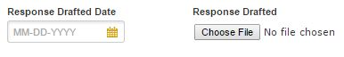
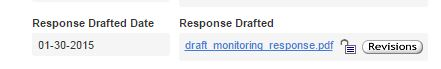
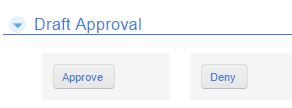

Response Drafted (to be used by the Project Director or their designee)
Specify the date in which a draft response to the monitoring report was completed. Upload backup documentation using the "Choose File" button. A member of the leadership team will review and notify the Project Director if approved for submission or not.

To save the record, select the "Save" button. 
Draft Approval (to be used by a member of the leadership team)
Access the drafted response by selecting the file name to the right of the Response Drafted Date.

Once reviewed, select the "Approve" or "Deny" button as applicable. If denied, the Project Director will be notified so that a revised draft may be uploaded. Repeat as necessary.

Created with the Personal Edition of HelpNDoc: Free help authoring tool